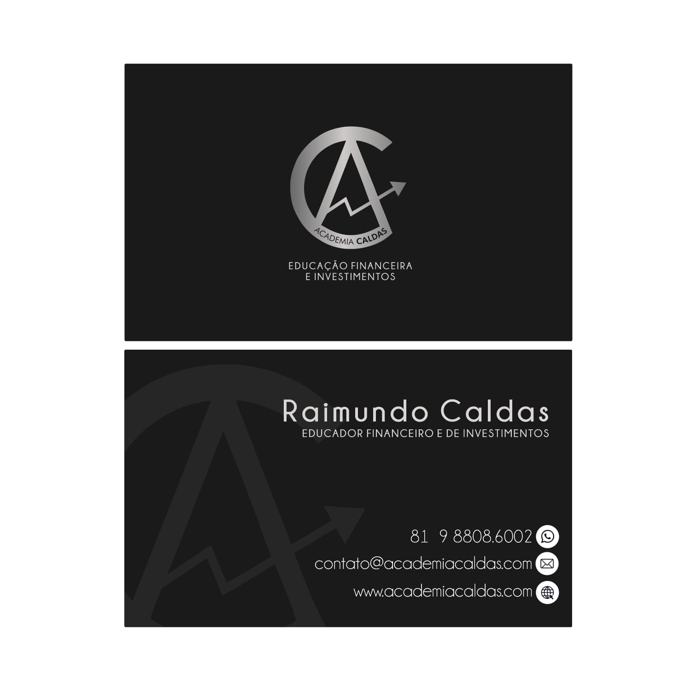
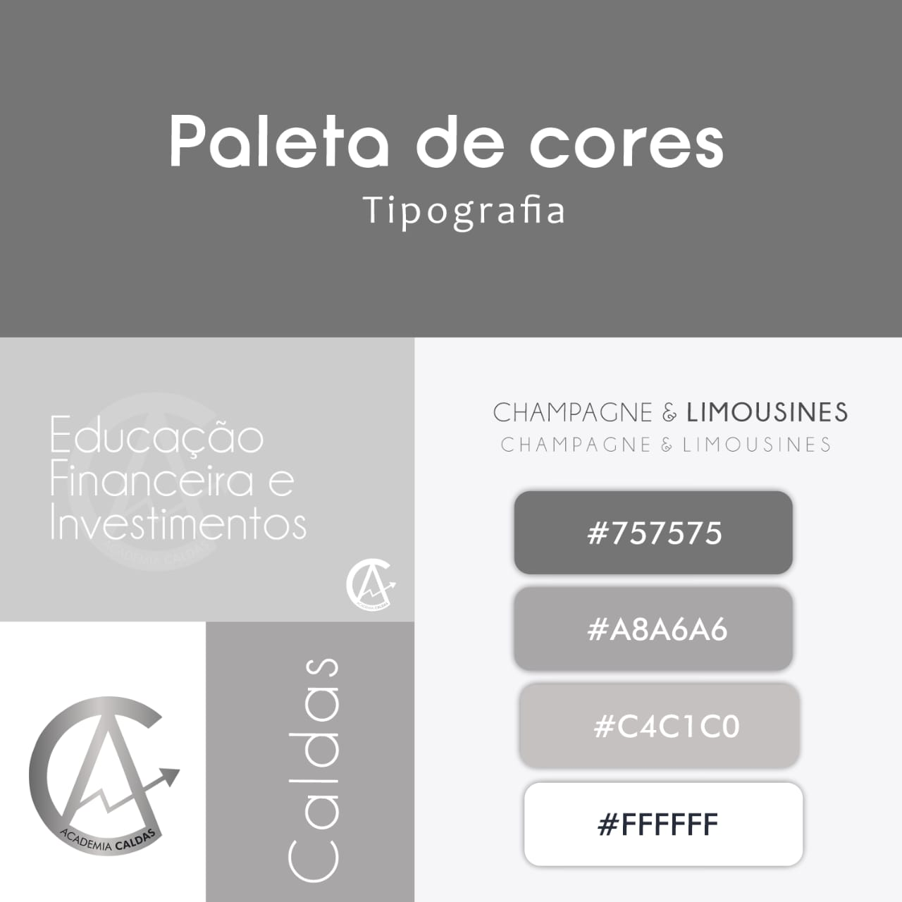
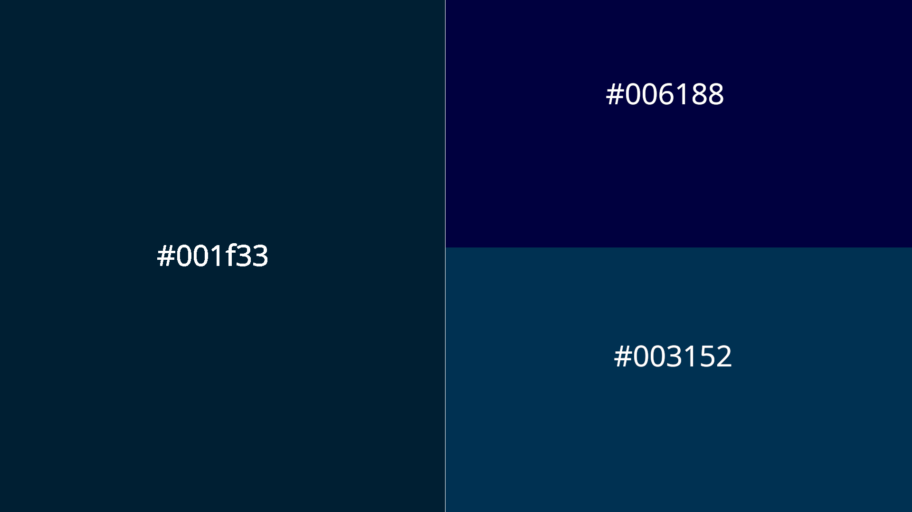

Decisão central
Manter a base institucional em azul profundo e grafite, preservar a elegância do prata já presente na marca e usar o dourado apenas como acento premium. O dourado fica bonito, mas deve valorizar a composição, sem dominar tudo.
Academia Caldas
Direção visual para site, Social Media e Tráfego Pago com base em azul profundo, prata institucional e dourado pontual.
Objetivo do documento
Manter a base institucional em azul profundo e grafite, preservar a elegância do prata já presente na marca e usar o dourado apenas como acento premium. O dourado fica bonito, mas deve valorizar a composição, sem dominar tudo.
Contexto e leitura estratégica
A leitura do material mostra presença em palestras, workshops, mentorias, cursos e comunicação sobre educação financeira, organização, dívidas, investimentos e finanças para casais.
Frase guia
Conhecimento financeiro com presença premium: clareza para organizar, proteção para decidir e prosperidade para crescer.
| Ponto | Direção |
|---|---|
| O que comunicar | Confiança, orientação, método, experiência, organização e caminho prático. |
| O que evitar | Excesso de brilho, visual genérico de mercado financeiro, promessas de enriquecimento e poluição visual. |
| Tonalidade | Profissional, educativa, humana, segura e levemente premium. |
Diagnóstico visual atual
As referências recebidas apontam logo monocromática, cartão escuro em prata, paleta cinza, proposta em azuis e peças geradas com forte uso de dourado/prata.



A base atual funciona bem em monocromia e em fundos escuros.
Deve ser preservado porque já aparece na assinatura visual e transmite sobriedade.
Tem impacto, mas precisa ser dosado para não parecer exagerado ou artificial.
#001F33, #003152 e #006188 dão profundidade, confiança e consistência digital.
Direção recomendada
A direção recomendada é uma identidade premium discreta, com a sobriedade do azul profundo, a assinatura elegante do prata e o dourado como marcador de valor. O resultado deve parecer confiável para empresas, igrejas, casais e público geral, sem perder apelo comercial.
A marca deve parecer séria, não luxuosa demais.
Textos legíveis, hierarquia limpa e bom respiro.
Usar para chamadas, linhas, selos, ícones e pequenos destaques.
Usar em logo, textos nobres, divisórias, molduras e detalhes finos.
Usar como fundo principal do site, posts institucionais e criativos de alto impacto.
Paleta de cores
A paleta combina as cores já levantadas com ajustes de uso para criação de site, posts, carrosséis, stories e anúncios.
#001F33
Fundo escuro premium.
#003152
Bloco institucional.
#006188
Detalhes e transições.
#C4C1C0
Textos nobres e detalhes.
#A8A6A6
Molduras e divisórias.
#D6A441
CTAs principais e acentos.
#E8E6E3
Fundo claro educativo.
#FFFFFF
Texto sobre azul profundo.
Regras de uso das cores
| Uso | Combinação |
|---|---|
| Fundo escuro premium | #001F33 + texto branco/prata + detalhe dourado. |
| Bloco institucional | #003152 + #C4C1C0 + #FFFFFF. |
| Fundo claro educativo | #E8E6E3 + #001F33 + detalhe #006188. |
| CTA principal | #D6A441 com texto grafite ou azul profundo. |
| CTA secundário | Borda prata em fundo azul profundo. |
| Alertas e chamadas | Dourado escuro em pequenas áreas, nunca como fundo de texto longo. |
Fórmula recomendada
1 cor dominante + 1 cor de apoio + 1 acento.
Exemplo: azul profundo dominante, prata como texto/linha, dourado apenas no CTA.
Tipografia
A marca antiga cita Champagne & Limousines, uma fonte elegante, mas ela deve ser usada com cautela. Para site e anúncios, a leitura vem antes do estilo.
Título premium
Playfair Display
Também pode usar Cormorant Garamond ou similar serifada.
Subtítulos e navegação
Montserrat Semibold
Poppins ou Inter em peso médio/semibold.
Texto de corpo
Inter Regular
Open Sans ou Noto Sans para leitura longa.
Uso da fonte atual
Champagne & Limousines
Manter apenas em assinaturas, peças especiais ou quando houver boa legibilidade.
Logo e assinatura
A assinatura precisa aparecer limpa, com respiro e contraste adequado. O ideal é preservar a força monocromática da marca.
Elementos gráficos e imagens
| Elemento | Direção |
|---|---|
| Ícones recomendados | Escudo, gráfico crescente, livro, alvo, pessoa/família, calendário e check de diagnóstico. |
| Padrão gráfico | Linhas finas, molduras geométricas, pontos discretos e gráficos em baixa opacidade. |
| Fotografia | Palestras, turma, bastidores, professor em ação, interação com alunos, casais e empresas. |
| Ilustração | Usar com moderação; preferir ícones simples e consistentes. |
| Evitar | Muitas moedas, cifrões gigantes, 3D artificial em excesso, candlesticks poluídos e promessas visuais de enriquecimento. |
Aplicação no site
Regra de conversão: o site deve ser bonito, mas precisa vender clareza. Cada dobra deve responder: para quem é, qual problema resolve e qual é o próximo passo.
Aplicação em Tráfego Pago
Conteúdo educativo e diagnóstico financeiro gratuito.
Prova social, bastidores de workshop, autoridade e depoimentos.
Oferta direta do workshop/mentoria com data, local, benefício e CTA.
Regras rápidas para produção
Guia para as equipes
Próximos passos sugeridos
Primeiro consolidamos a direção, depois aplicamos nos pontos de maior impacto comercial.
Validar azul profundo + prata + dourado pontual, com a proporção definida neste documento.
Separar logo em PNG/SVG, paleta, fontes, ícones, texturas e exemplos de aplicação.
Hero, seções, cards, CTAs, formulário, bloco de autoridade e produtos.
Carrossel, post de frase, convite, prova social, story e capa de reels.
3 linhas visuais e 3 promessas para teste: diagnóstico, workshop e mentoria.
Criar pasta compartilhada com arquivos finais e naming padronizado.
Referência rápida
| Paleta principal | #001F33, #003152, #006188, #C4C1C0, #A8A6A6, #D6A441, #FFFFFF. |
| Proporção | 60% azul/grafite, 25% prata/branco, 10% azul médio, 5% dourado. |
| Títulos | Serifada premium: Playfair Display, Cormorant Garamond ou equivalente. |
| Texto | Inter, Montserrat, Open Sans, Noto Sans ou equivalente. |
| CTA principal | Dourado #D6A441 com texto escuro. |
| CTA secundário | Borda prata sobre fundo azul profundo. |
| Logo | Branca/prata em fundo escuro; preta/prata escura em fundo claro. |
| Imagem | Fotos reais + overlay azul; evitar banco de imagens financeiro genérico. |
| Social | Templates por função: autoridade, educação, prova social, evento e conversão. |
| Tráfego | Criativo limpo, promessa única, CTA direto e congruência com landing page. |
Aplicação em Social Media
Templates por função para posts, carrosséis e stories
Padrão de composição